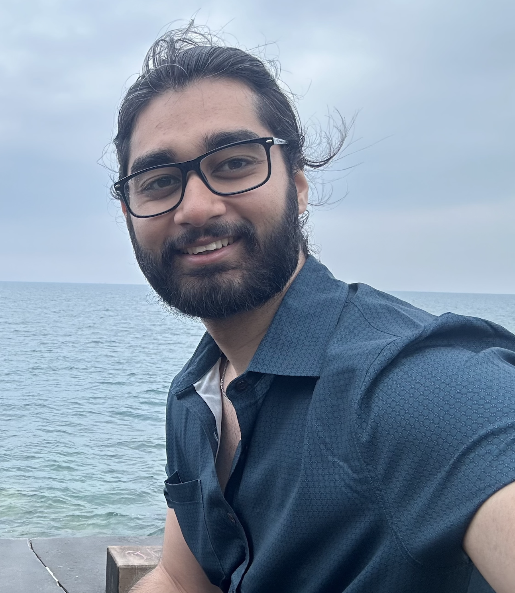

Rukhshan Haroon (he/him)



I am a third year Ph.D. student at Tufts University, USA. I am broadly interested in accessibility, generative AI, and human-computer interaction research. Re- cently, I have been redesigning online texting interfaces to incorporate assistive AI-agents that facilitate empathetic interactions between autistic and non-autistc users. I approach communication as reciprocal, advocating for interventions at both ends—autistic and non-autistic—to foster mutual understanding and distribute the responsibility for improving communication more evenly.
I am advised by Fahad R. Dogar.
Prior to Tufts, I completed my undergraduate degree in Computer Science from Lahore University of Management Sciences (LUMS), Pakistan. I was advised by Zartash Afzal Uzmi and Fareed Zaffar.
Publications
-
TwIPS: A Large Language Model Powered Texting Application to Simplify Conversational Nuances for Autistic Users
To appear in the 26th International ACM SIGACCESS Conference on Computers and Accessibility (ASSETS 2024). St. John's, Newfoundland and Labrador, Canada. -
On the Frontline During the Covid-19 Pandemic: Gender Inequality and Experiences of Healthcare Workers in Pakistan
Presented at ACM SIGCAS/SIGCHI Conference on Computing and Sustainable Societies (COMPASS) 2023 in Cape Town, South Africa.
Published in ACM Journal on Computing and Sustainable Societies (JCSS), vol. 2, issue 1, March 2024. -
LLMProxy: Reducing Cost to Access Large Language Models
Under submission in 2024. -
SoK: A Tale of Reduction, Security and Correctness - Evaluating Program Debloating Paradigms and Their Compositions
28th European Symposium on Research in Computer Security (ESORICS 2023). The Hague, The Netherlands.
-
Unpacking Misinformation Amid the COVID-19 Pandemic: A Mixed Methods Study
IEEE Internet Computing, vol. 26, no. 2, pp. 7-18, 1 March-April 2022.
Contact
Email: rukhshan.haroon@tufts.edu
Office: Room # 440K, 177 College Ave, Medford, MA 02155.